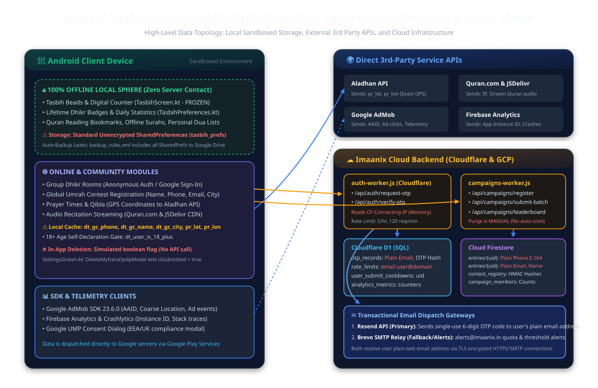
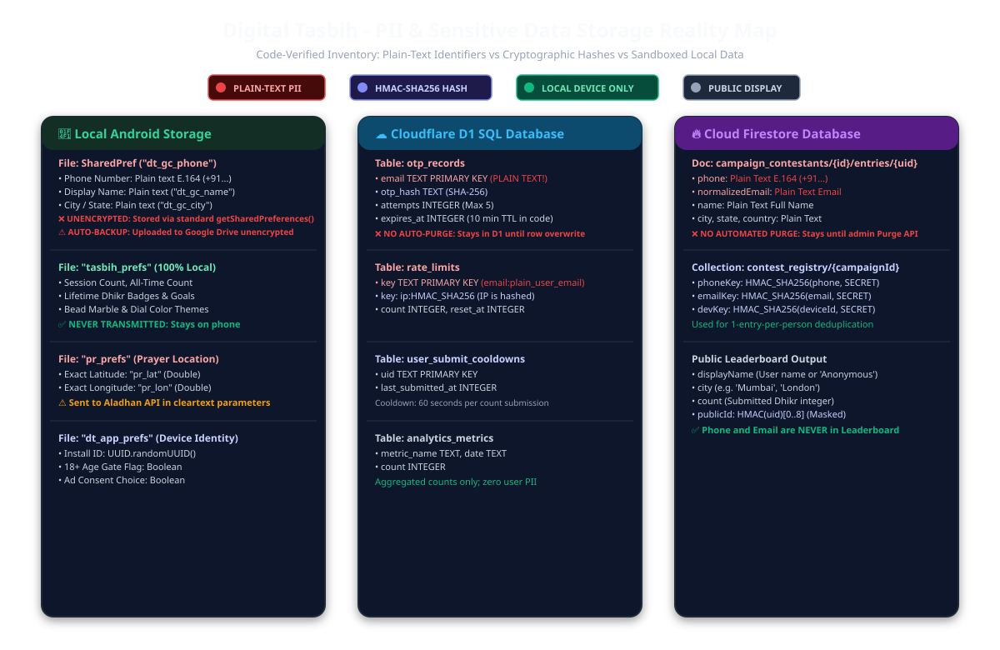
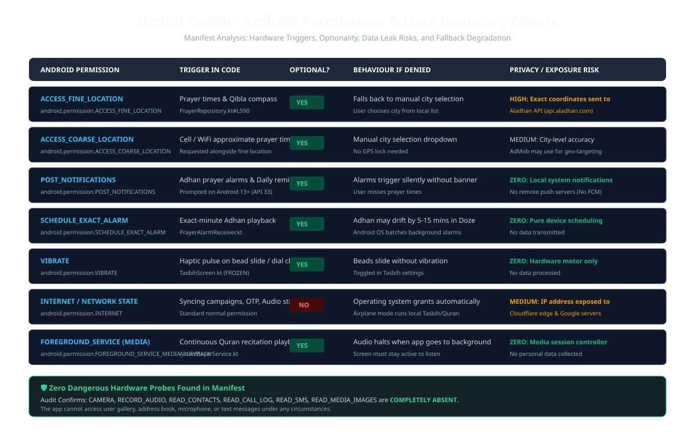
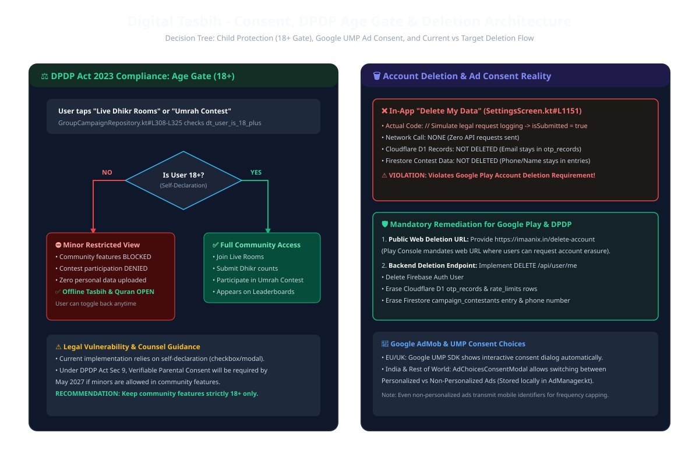

Evidence-based architectural topology, data boundaries, permission matrices, and consent mechanics for Digital Tasbih (com.tasbih.digitaltasbih).
01. End-to-End System Architecture & Data Flows
Architecture Topology

Illustrates the complete data journey between the sandboxed Android device, direct third-party cloud APIs (Aladhan, AdMob, Firebase), Cloudflare Edge Workers (auth-worker, campaigns-worker), Cloudflare D1 SQL, and Google Cloud Firestore.
Download Raw SVG
02. Backend Storage & PII Reality Map
Data Inventory

Reveals the exact storage states across local SharedPreferences, Cloudflare D1, and Cloud Firestore. Distinguishes plain-text PII (E.164 phone numbers, OTP emails) from HMAC-SHA256 duplicate-prevention hashes and masked public leaderboard outputs.
Download Raw SVG
03. Android Permissions & Hardware Boundaries
Hardware & Permissions

Details all 9 permissions defined in AndroidManifest.xml, hardware triggers in code, optionality, graceful degradation when denied, and confirms zero dangerous invasive permissions (Camera, Mic, Contacts, SMS).
Download Raw SVG
04. Consent, DPDP 18+ Age Gate & Deletion Architecture
Compliance & Rights

Maps the user journey through the DPDP Act 18+ community gate, Google UMP ad consent choices, and highlights the simulated in-app deletion button versus Google Play's required deletion architecture.
Download Raw SVG